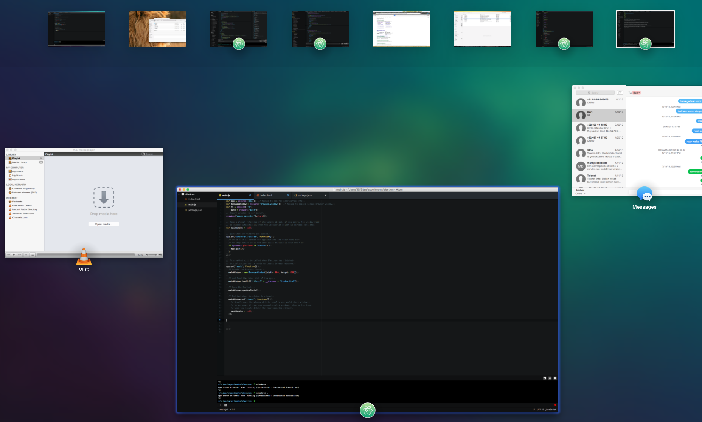
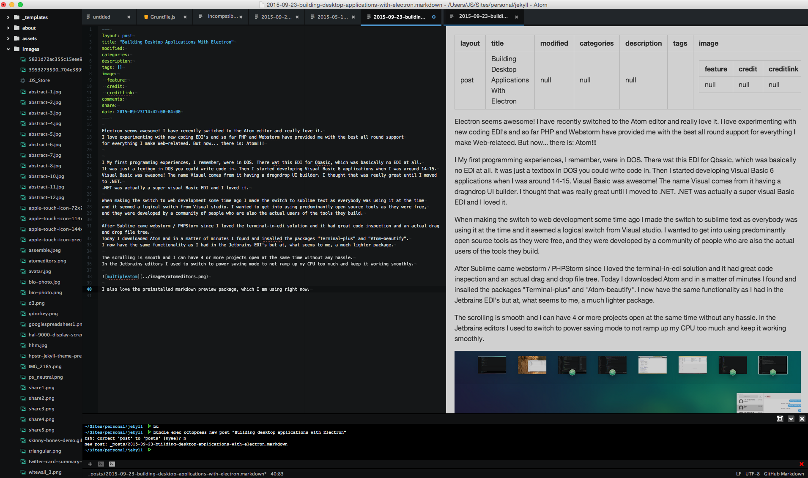
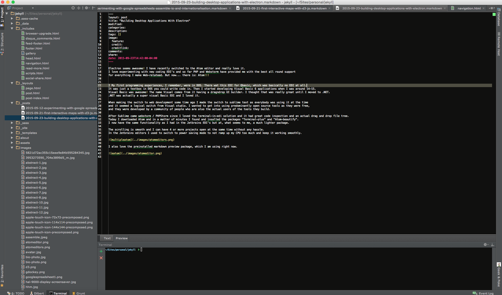

I have recently switched to the Atom editor and really love it. I love experimenting with new coding environments and so far PHP- and Webstorm have provided me with the best all round support for everything I make Web-related. But now… there is: Atom!!!
My first programming experiences, I remember, were in DOS. There was this editor for Qbasic, which was basically no editor at all. I know there’s always been vi, or vim, but I didn’t know about them as I was 11. When I was around 14-15, I started developing Visual Basic 6 applications. Visual Basic was awesome! The name Visual comes from it having a drag & drop UI builder. I thought that was really great until I moved to .NET. Dot NET was actually a super visual Basic EDI and I loved it.
When making the switch to web development some time ago I started out using sublime text as everybody was using it at the time. I wanted to get into using predominantly open source tools as they are free, and they are developed by a community of people who are also the actual users of the tools they build. However, after Sublime came Webstorm / PHPStorm since I loved the terminal-in-edi solution and it had great code inspection and an actual drag and drop file tree.
Today I downloaded Atom and in a matter of minutes I found and insalled the packages “Terminal-plus” and “Atom-beautify”. I now have the same functionality as I had in the Jetbrains EDI’s but in, what seems to me, an editor package.
The scrolling is smooth and I can have 4 or more projects open at the same time without any hassle. This would be a nogo using the Jetbrains EDI’s. You either had to minimize the Jetbrains instances and only have one open at a time or switch to power saving mode. Not doing this would ramp up the CPU too much and keep them from working smoothly.

I also love the preinstalled markdown preview package, which I am using right now:
| Atom | PHPStorm |
|---|---|
|  |  |
PHPStorm also has the markdown preview, but its in a tabswitcher, and I couldn’t figure out how to make it show permanently on the side like the one in Atom.
Overall I enjoy the cleaner, distraction free look of the Atom Editor. To add to my development environment, A lot of the buttons and tabs that I don’t use in PHPStorm are just not there. You can find all these in the mac top menu bar, which enforces learning keyboard shortcuts. And I don’t mind. My work environment is cleaner, and I have a larger area to code. Also, the few seconds it takes to look up a hotkey combination for a common command will shave off countless seconds of work in the future.
Also, what I like about Atom is that you can customize it to your own needs. Atom is flexible and I can only install the plug-ins I need, whereas the Jetbrains EDI’s come with a lot of stuff I’m rarely using. If you don’t like something, or want to make it better, it is hackable